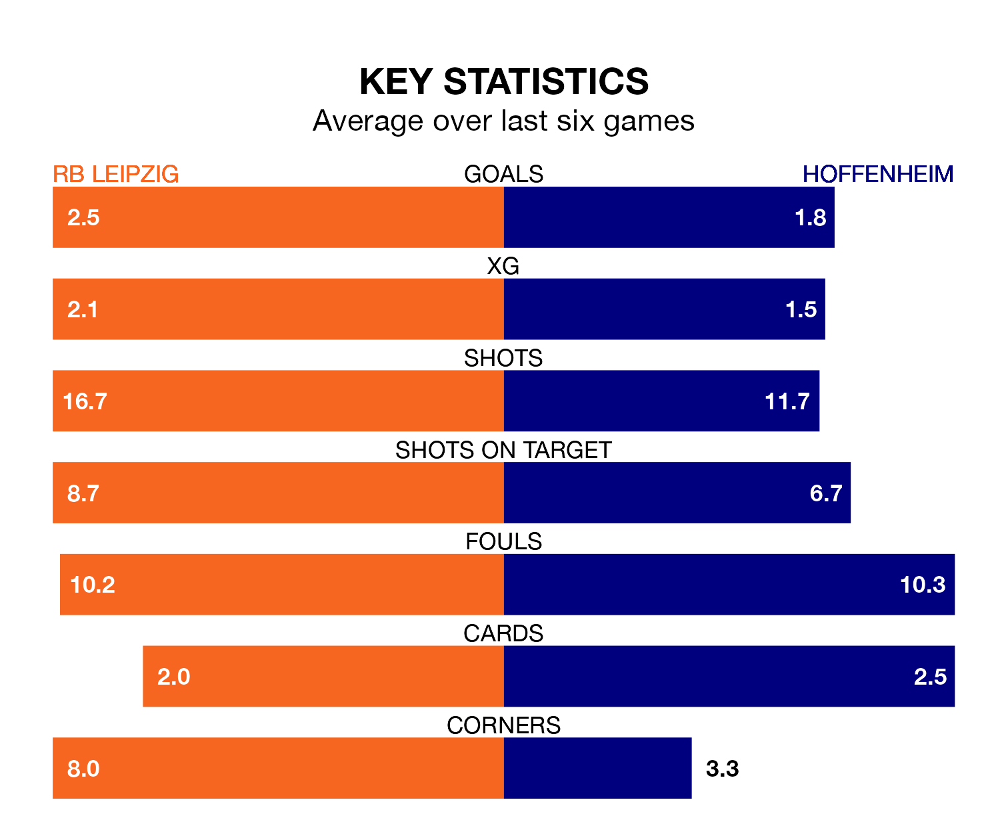

RB Leipzig are heavy favourites to keep all three points at home in Saturday's late kick-off against Hoffenheim.
RB Leipzig, who sit fourth in the Bundesliga with 14 games played, are priced at 1.6 to seal victory at the Red Bull Arena.
Sitting two places and six points behind them in the table, Hoffenheim are 4.8 to win with *Betting Company*, while the draw is at 4.2.
With 34 goals in 14 games so far this season, RB Leipzig are the league's joint-third-highest scorers with 2.4 goals per game. And they are conceding fewer than average, letting in 15 goals at a rate of 1.1 per game.
Hoffenheim are also above average scorers, with 2.0 goals per game, compared to a league average of 1.7. They have conceded 1.7 goals per game.
With Janis Blaswich between the sticks, the home side can rely on one of the league's safest pair of hands. He has kept five clean sheets in his 14 appearances this season, and no 'keeper has prevented the opposition scoring more often in the Bundesliga.
In the visitors' net, Oliver Baumann has one clean sheet in 14 games. He has conceded a goal every 60 minutes, 50% more often than the 90 minutes between goals for Blaswich.
In the last five years, RB Leipzig and Hoffenheim have played each other on 10 occasions. RB Leipzig won seven of them, Hoffenheim one, and they drew twice.
On average, RB Leipzig scored 1.7 goals and Hoffenheim 0.6 in those matches.
Their last meeting was on April 29, when RB Leipzig won 1-0 at home.
RB Leipzig are in reasonable form in the Bundesliga, with four wins and two losses from their last six games.
With two wins and two draws over that period, Hoffenheim's form is worse – they have taken eight points from 18, compared to RB Leipzig's 12.
RB Leipzig's last match was on December 9, a 3-2 win against Borussia Dortmund, with Christoph Baumgartner, Ramy Bensebaini (own goal) and Yussuf Poulsen getting the goals for RB Leipzig.
Hoffenheim beat Bochum 3-1 last time out, on December 8, with Andrej Kramarić, Erhan Mašović (own goal) and Ihlas Bebou on the scoresheet.
